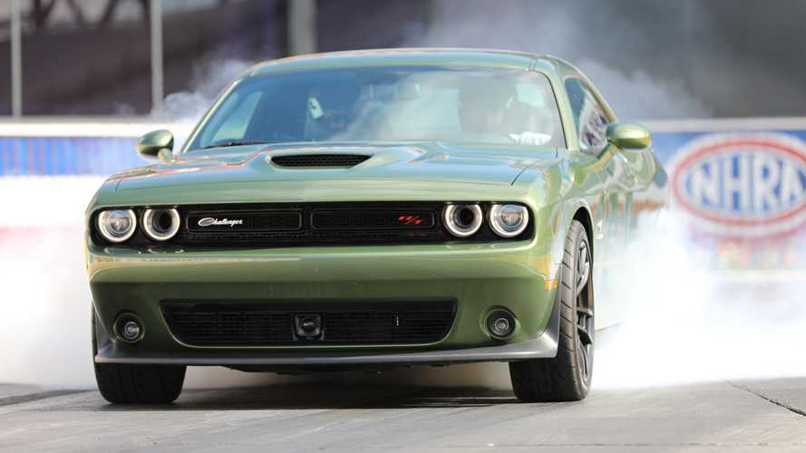
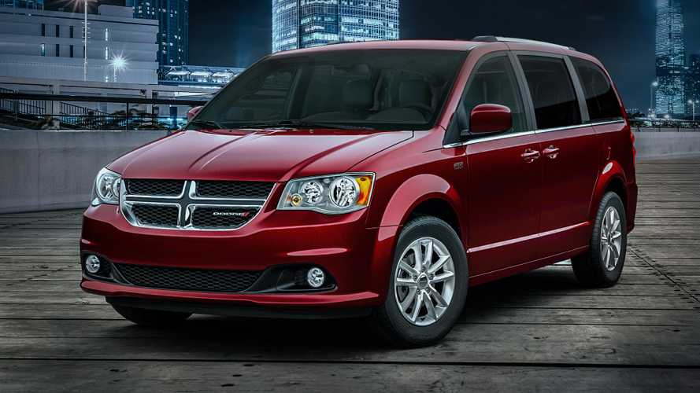
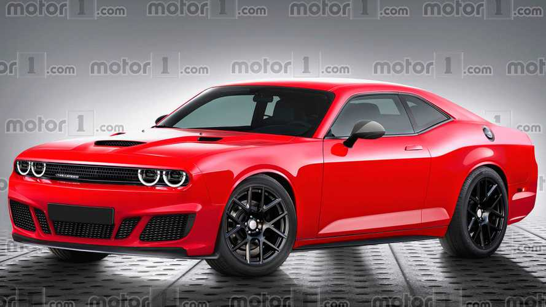

NEWS
Dodge Says Next-Gen Challenger Won’t Necessarily Come In 2023
This week, eagle-eyed folks from Muscle Cars And Trucks spotted a somewhat revealing detail on the press photos of the 2020 Dodge Challenger. More ...
Dodge Grand Caravan Production May End In 2020
Production of the long-lived Dodge Grand Caravan will allegedly finally end in May 22, 2020, according to the industry analysts at AutoForecast Solutions in a report from Automotive News Canada. More ...
Next Dodge Challenger Might Be Electrified, Says FCA Boss
The end of the muscle car is near... or is it? More ...